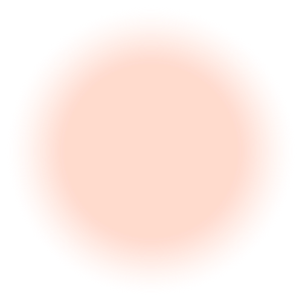

Particle detectors versus particle localisation: dual representations of the Poincaré group
Evan Galea, and Magdalena Zycha, b
Some relevant questions:
What is a particle?
Where is a relativistic particle?
Can we count particles locally?
Unruh effect
Inertial observer
Vacuum
Accelerating observer

Thermal bath
Particle number is observer dependent!
Unruh-DeWitt 'monopole' detector
Couple system to two-level detector $\mathcal{H}_{\mathrm{tot}} = \mathcal{H}_{\mathrm{sys}} \otimes \mathbb{C}^2$
$| 1 \rangle$
$| 0 \rangle$
Particle detectors are a highly idealised system!
Operational definition of 'particles'
"There are quantum states and there are particle detectors.
Quantum field theory enables us to predict probabilistically how a particular detector will respond to that state.
That is all."
- Paul Davies [1]
Detectors with quantised centre of mass
Considered by Unruh and Wald for a box detector [3]
Transition rate approximately given by template function
Q. What would one observe if this experiment were performed?
Open Questions
Q. What is a 'particle'?
A. A 'particle' is what a 'particle detector' detects.
Q. What is a 'particle detector'?
A. A 'particle detector' is a localised system with which one may perform local operations on a quantum field.
Q. What is meant by a 'localised system'? For a relativistic particle detector, how should one define its localisation?
A. ...
How should we interpret these results?
Localisation in RQM I
Newton and Wigner [10] defined a relativistic position operator by requiring it satisfy a set of invariance conditions
Superposition of localised systems is also localised.
Invariant wrt spatial rotations and reflections.
Localised states are orthogonal wrt translated states.
Generators of Lorentz group applicable to the localised states.
Coincides with the non-relativistic position operator [11]
How should we interpret these results?
Localisation in RQM II
Philips [12] defined a Lorentz-invariant position operator
Superposition of localised systems is also localised.
Invariant wrt spatial rotations and reflections.
Localised states are invariant wrt Lorentz boosts.
The localised states are normalisable.
No subset of the set of localised states satisfies the above conditions.
In second-quantised formalism,
Philips' position state is equivalent to the action of field operator on vacuum
$| \vec{x}_p \rangle \equiv \hat{\psi}(\vec{x}) | 0 \rangle$
How should we interpret these results?
Localisation in RQM III
Localisation schemes not first- versus second-quantised.
Correspond to different representations with associated wave equations